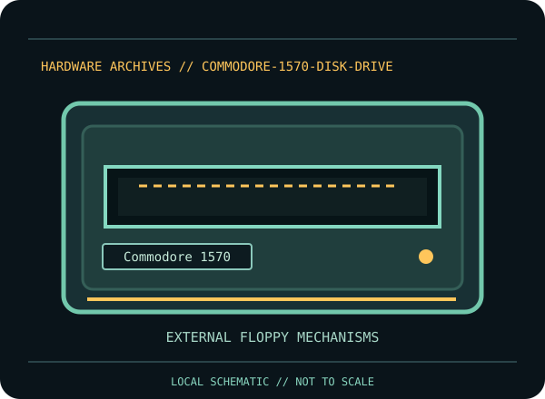

[ INDIVIDUAL COMPONENT // FLOPPY DRIVES ]
Commodore 1570 Disk Drive
This record identifies a documented physical floppy drive, controller, or preservation interface. It separates confirmed model facts from details that vary by suffix, board revision, host, media and configuration.

IDENTIFICATION NOTE: Match the full model/part number, revision, connector and manual before use. Similar family names do not establish interchangeable mechanics or host compatibility.
Model specifications
| Catalog subcategory | External floppy mechanisms |
|---|---|
| Exact model / family | Commodore 1570 |
| Era / product family | Commodore 128-era single-drive disk peripheral |
| Documented characteristics | External single-drive 5.25-inch diskette unit. The 1570 is a model-specific single-sided member of Commodore’s 157x drive family; the cited guide distinguishes it from the double-sided 1571. Capacity/format is left to the actual disk format and system documentation rather than inferred across 157x models. |
| Interface / connectors | Commodore serial peripheral bus (IEC) connection to compatible Commodore hosts; connector cabling and host commands differ from IBM PC 34-pin floppy wiring. |
| Host and media compatibility | The 1570/1571 user guide documents Commodore host setup and identifies 1570 behavior separately from 1571 double-sided operation. Compatibility with C64/C128 software depends on disk format, DOS/host support and the selected side/geometry; do not treat a 1571-only disk as readable on a 1570. |
Model-specific compatibility checks
- Identify the complete model/suffix, board revision, serial/date codes and connector arrangement from the physical unit; photograph all labels before installation.
- The 1570/1571 user guide documents Commodore host setup and identifies 1570 behavior separately from 1571 double-sided operation. Compatibility with C64/C128 software depends on disk format, DOS/host support and the selected side/geometry; do not treat a 1571-only disk as readable on a 1570.
- Confirm the host controller, drive wiring, power, drive select, termination, media density and recording format against the cited model documentation. Do not infer a fit or capacity solely from the drive size or connector shape.
Preservation and service notes
Keep the power supply and serial bus disconnected for inspection. Photograph the bottom label, board revision, and mechanism part number before service; similar external cases can contain different drive electronics. Use the specific guide for cleaning and alignment and retain disk images plus acquisition notes.
Keep original media and raw captures intact. Log the exact drive/controller/software configuration, acquisition date, condition and any service performed; checksum verified copies before creating derivatives.
Manufacturer documentation & sources
- Commodore — 1570/1571 Disk Drive User’s GuidePeriod Commodore user documentation for setup, disk operation and distinctions between 1570 and 1571 models.
Sources are model-specific manufacturer documentation or archival copies of the original source. Where a document covers a family or multiple revisions, confirm its applicability to the exact unit before using an electrical or service specification.